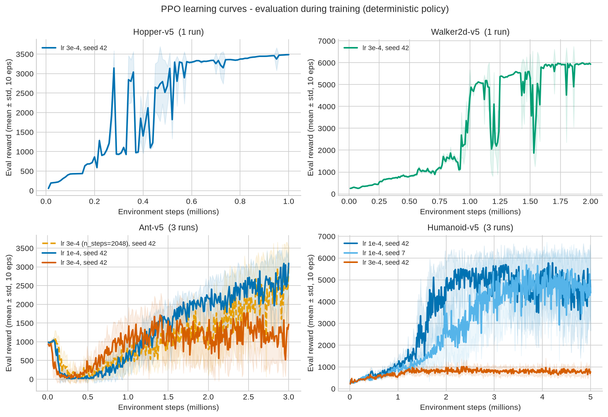
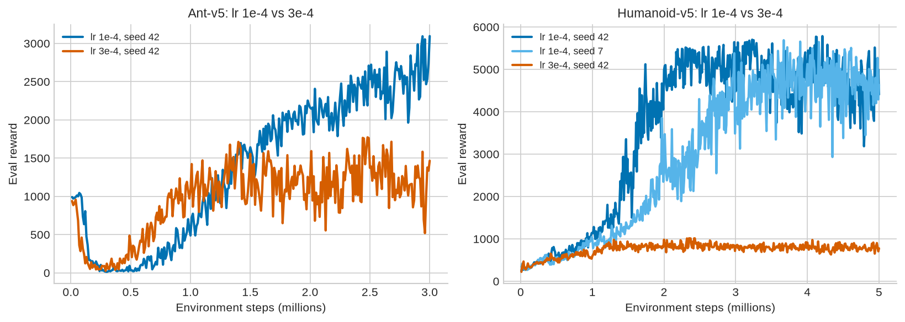
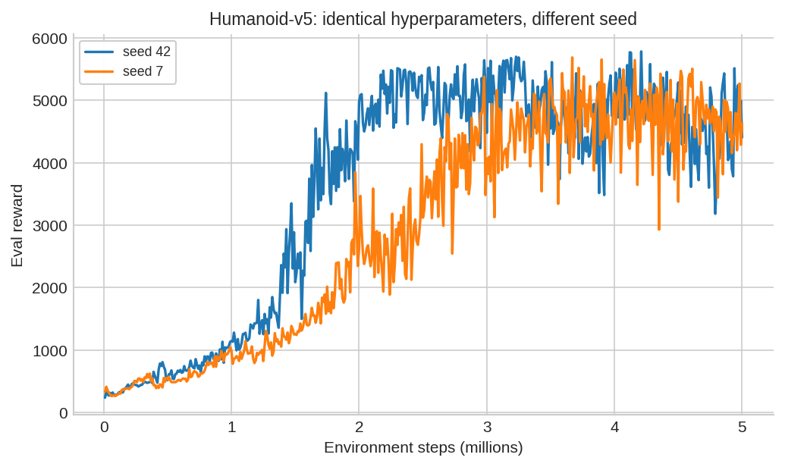
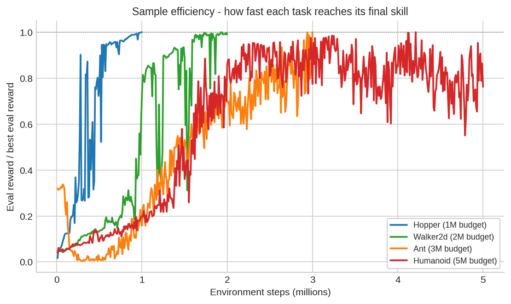
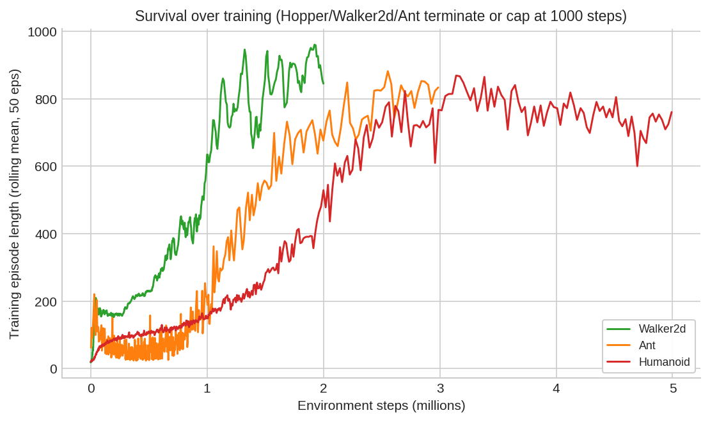
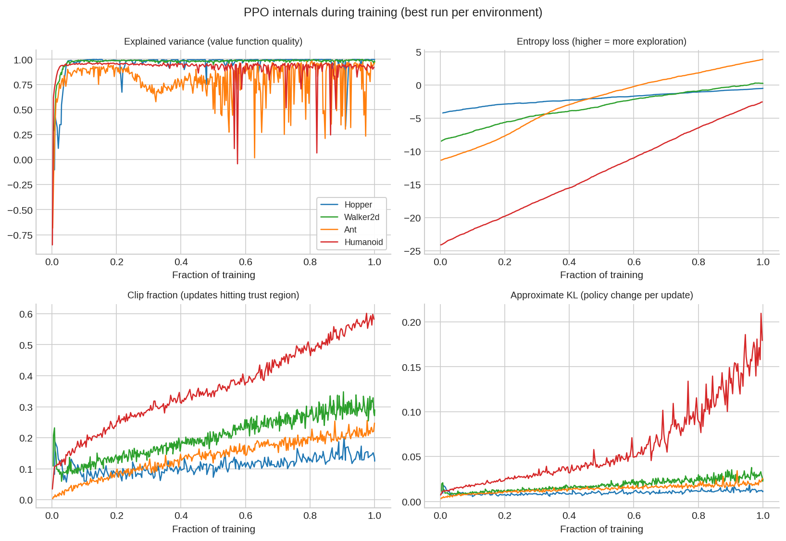

PPO Locomotion Study
This study evaluates Proximal Policy Optimization (PPO) with Stable-Baselines3 on four continuous-control MuJoCo locomotion tasks: Hopper, Walker2d, Ant, and Humanoid. Across eight runs and 27M environment steps, each experiment follows the same evaluation protocol. A deterministic ten-episode evaluation runs approximately every 10k steps to identify the best checkpoint, which is then re-evaluated over 20 deterministic episodes using frozen observation-normalisation statistics and raw, unnormalised rewards. The study compares two learning rates on Ant and Humanoid, tests seed sensitivity for the best Humanoid configuration, and evaluates two rollout lengths on Ant. The main result is that learning rate strongly affects final performance. On Humanoid, lr 3e-4 converged to a local optimum near 850 reward, while lr 1e-4 reached 4 451 ± 1 556.
View on GitHubMethods
- PPO uses a clipped surrogate objective (ε = 0.2) and GAE (γ = 0.99, λ = 0.95), with a policy and value MLP consisting of two 64-unit tanh layers.
- Every run uses four parallel environments and 1024 rollout steps, producing 4096 fresh on-policy transitions per update. Each rollout supports 16 minibatches and 10 epochs, or 160 gradient updates with batch size 256.
VecNormalizenormalises observations and rewards during training, with a clip value of 10. Evaluation uses frozen observation statistics and raw, unnormalised rewards.- Only one hyperparameter is varied in each controlled comparison, and all values are specified explicitly in the training scripts.
Tools
- Python, Stable-Baselines3 2.9, PyTorch 2.13, Gymnasium/MuJoCo v5, TensorBoard, NumPy, and Matplotlib.
- Each environment follows a train, evaluate, and record pipeline with per-run checkpoints and TensorBoard logs.
analyze_ppo.pyrebuilds the tables and figures from raw run artifacts, whilefinal_eval.pyrepeats the 20-episode evaluation for any checkpoint.
Evaluation Protocol
- During training,
EvalCallbackruns ten deterministic episodes approximately every 10k steps and saves the checkpoint with the highest evaluation reward. - Each best checkpoint is re-evaluated over 20 deterministic episodes in an environment initialised with seed 2024.
- The protocol is identical across all eight runs, allowing direct comparison between configurations and environments.
Outcome
- The best final scores were 3 486 ± 5 on Hopper, 6 008 ± 27 on Walker2d, 3 147 ± 645 on Ant with
n_steps = 2048, and 4 451 ± 1 556 on Humanoid with lr 1e-4 and seed 7. - The lower learning rate performed better in both comparisons: by 1 323 reward on Ant and 3 311 reward on Humanoid relative to lr 3e-4.
- PPO diagnostics indicate failure before the reward curves make it obvious. The best Humanoid run approaches its trust-region boundary, while the stuck run loses entropy early.
Results
These headline results come from the best checkpoint for each environment, re-evaluated over 20 deterministic episodes with raw, unnormalised reward.
| Environment | Task | Obs / act dims | Budget | Best configuration | Final score (20 episodes) |
|---|---|---|---|---|---|
| Hopper-v5 | Hop forward on one leg | 11 / 3 | 1M steps | lr 3e-4, seed 42 | 3 486 ± 5 |
| Walker2d-v5 | Walk forward on two legs | 17 / 6 | 2M steps | lr 3e-4, seed 42 | 6 008 ± 27 |
| Ant-v5 | Walk with four legs | 105 / 8 | 3M steps | lr 3e-4 + n_steps 2048 | 3 147 ± 645 |
| Humanoid-v5 | Walk upright, 17 actuators | 348 / 17 | 5M steps | lr 1e-4, seed 7 | 4 451 ± 1 556 |
All Eight Runs
Every run in the study, with both comparison axes (learning rate, rollout length) and the seed check side by side.
| Env | Run | lr | Seed | n_steps | Budget | Best eval | Final eval (20 eps) | Steps to 50% of best |
|---|---|---|---|---|---|---|---|---|
| Hopper | hopper_ppo | 3e-4 | 42 | 1024 | 1M | 3 486 | 3 486 ± 5 | 270 k |
| Walker2d | walker2d_ppo | 3e-4 | 42 | 1024 | 2M | 5 993 | 6 008 ± 27 | 970 k |
| Ant | ant_ppo_lr1e-04 | 1e-4 | 42 | 1024 | 3M | 3 095 | 3 100 ± 97 | 1.41 M |
| Ant | ant_ppo_2048_lr3e-04 | 3e-4 | 42 | 2048 | 3M | 3 018 | 3 147 ± 645 | 1.74 M |
| Ant | ant_ppo_lr3e-04 | 3e-4 | 42 | 1024 | 3M | 1 771 | 1 605 ± 608 | 10 k* |
| Humanoid | humanoid_ppo_lr1e-04_seed42 | 1e-4 | 42 | 1024 | 5M | 5 783 | 4 160 ± 1 525 | 1.43 M |
| Humanoid | humanoid_ppo_lr1e-04_seed7 | 1e-4 | 7 | 1024 | 5M | 5 687 | 4 451 ± 1 556 | 1.97 M |
| Humanoid | humanoid_ppo_lr3e-04_seed42 | 3e-4 | 42 | 1024 | 5M | 1 014 | 850 ± 179 | 350 k* |
* The lr 3e-4 Ant and Humanoid runs reached half of their own best score early and then plateaued. “Steps to 50%” measures the time to reach a threshold, not final quality. For the stuck runs, the more meaningful measure is the best evaluation score because neither run escaped its local optimum.
Key Findings
The controlled comparisons and PPO training signals point to four main conclusions.
What the comparisons showed
- Learning rate is the most consequential hyperparameter. lr 1e-4 outperformed lr 3e-4 on both comparison tasks. The difference was especially large on Humanoid, where lr 3e-4 remained near 850 reward for the full 5M-step budget.
- Seed sensitivity is real but secondary. The two Humanoid runs at lr 1e-4 reached similar best evaluation scores, 5 783 and 5 687, but their final 20-episode scores differed by about 300 points. Single-run rankings should therefore be interpreted cautiously.
- Larger rollout buffers can help slower learners. Increasing Ant’s
n_stepsfrom 1024 to 2048 reduced early progress at 1M steps, from 1 085 to 571, but produced a better final result with lower variance, 3 147 versus 1 605. - Training diagnostics can reveal failure early. Successful runs raised explained variance to approximately 0.95 or higher within the first 10–15% of training. The failed Humanoid run became nearly deterministic before it explored behaviours associated with walking.
Survive vs score
- Walker2d and Ant reach the 1000-step episode cap and remain there, indicating that basic survival is solved for these tasks.
- Humanoid plateaus around 750–780 steps even in the best run. The policy still falls roughly one-quarter of the way through the maximum episode, which is consistent with the ±1 500 spread in final evaluation scores.
- The best Humanoid run approaches its trust-region boundary, with clip fraction near 0.6 and approximate KL near 0.2. KL early stopping, learning-rate decay, an entropy bonus, or a larger network are reasonable next experiments.
Training Figures






Rollout Demos
Each clip shows one rollout from a selected checkpoint using the deterministic evaluation policy without exploration noise. The clips are approximately 17 seconds of simulated time.